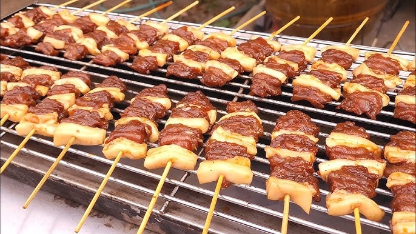
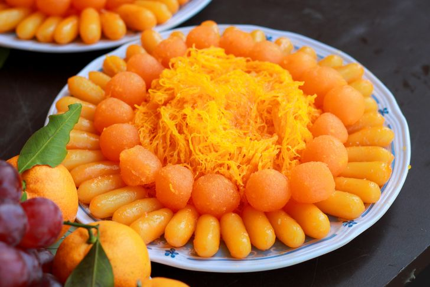
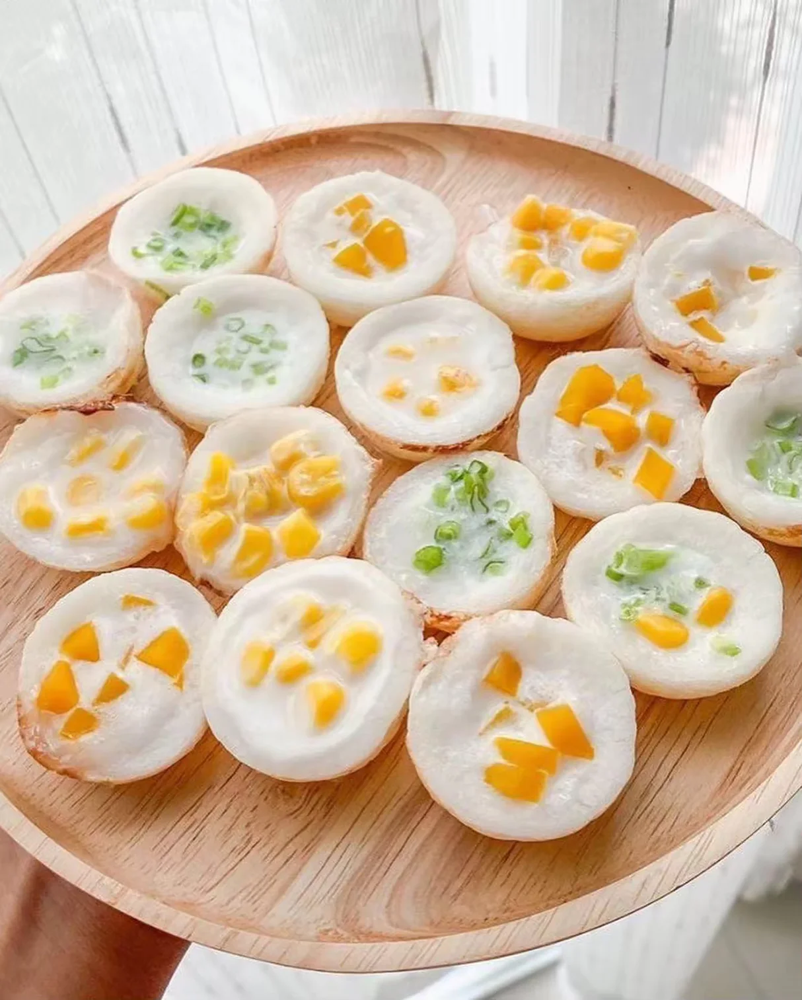
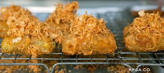
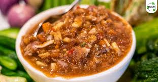

หมูปิ้งรสหวานหอม สูตรดั้งเดิมของกรุงเทพ
นิยมซื้อแบบแพ็กสุญญากาศเป็นของฝากยอดนิยมของฝากประเภทอาหารกรุงเทพมหานคร

หมูปิ้งสูตรโบราณ

ทองหยด / ฝอยทอง
ขนมไทยโบราณ รสหวานละมุน
เป็นของฝากมงคล สื่อถึงความเจริญรุ่งเรือง

ขนมครกสำเร็จรูป
ขนมไทยยอดนิยม กลิ่นหอมกะทิ
สามารถนำไปอุ่นรับประทานเองได้ง่าย

ข้าวเม่าทอด
ของว่างไทยโบราณ กรอบนอกนุ่มใน
หาซื้อได้ตามตลาดเก่าและชุมชนดั้งเดิมในกรุงเทพ

น้ำพริกสูตรกรุงเทพ
น้ำพริกรสกลมกล่อม ทานคู่ผักสดหรือปลาทู
เหมาะสำหรับซื้อเป็นของฝากให้คนในครอบครัว